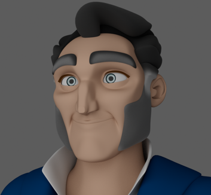
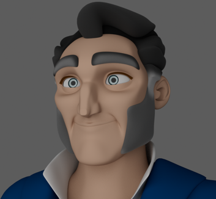
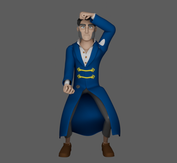
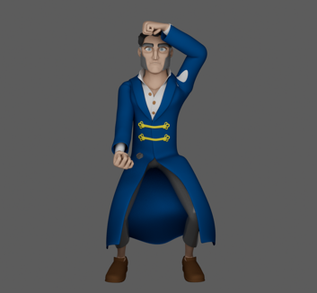

Nyra
Game-Ready Rig · FK/IK System · Stretch & Squash · Bone-Based Facial Rig · Advanced Cloth Setup
 See on Vimeo
See on Vimeo
3D model from Alvirenz-101, CGTrader.
This character rig was developed with a strong focus on real-time applications, combining efficient deformation, clean hierarchy and animator-friendly controls. The setup is optimized for gameplay while maintaining enough flexibility for expressive animation.
Facial Rig
The facial rig was designed to provide clear and efficient control over facial expressions. Eye and lip follow systems were implemented to allow secondary controls to naturally react to main controls movement, improving overall cohesion during animation. Additionally, an IK chain was created for the nose to enable subtle directional control and deformation when required.

 

To build this facial rig, the following process was followed:
- Blocking (first image): initial weight assignment was performed by binding facial geometry to the corresponding joints, establishing the base deformation.
- Smooth (second image): after blocking, the weights were refined and smoothed to ensure clean transitions and stable deformations during animation.
Body Rig
The body rig was built using a FK/IK system for the limbs and spine, allowing animators to switch between both workflows depending on the animation needs. Stretch and squash functionality was added to the arms, legs and spine to enhance posing and motion while keeping the setup suitable for real-time environments. The overall structure is optimized for video games, prioritizing performance, clean deformation and ease of integration into game engines.
 


To obtain this body rig, the following process has been followed:
- Blocking (first image): initial skinning was applied by assigning vertices to their respective joints, defining the main deformation areas.
- Smooth (second image): the weights were then smoothed and adjusted to improve deformation quality and maintain stability during animation.
Clothes
The clothing rig blends multiple techniques for controlled secondary motion: katanas use Proximity Pin, Motion Paths and Follow systems; the collar combines Aim Constraints, IK Handles and Proximity Pin to preserve volume; shoulder armor relies on IK Handles and Proximity Pin for clean deformation; and the skirt features a hybrid FK/IK setup for flexible control.